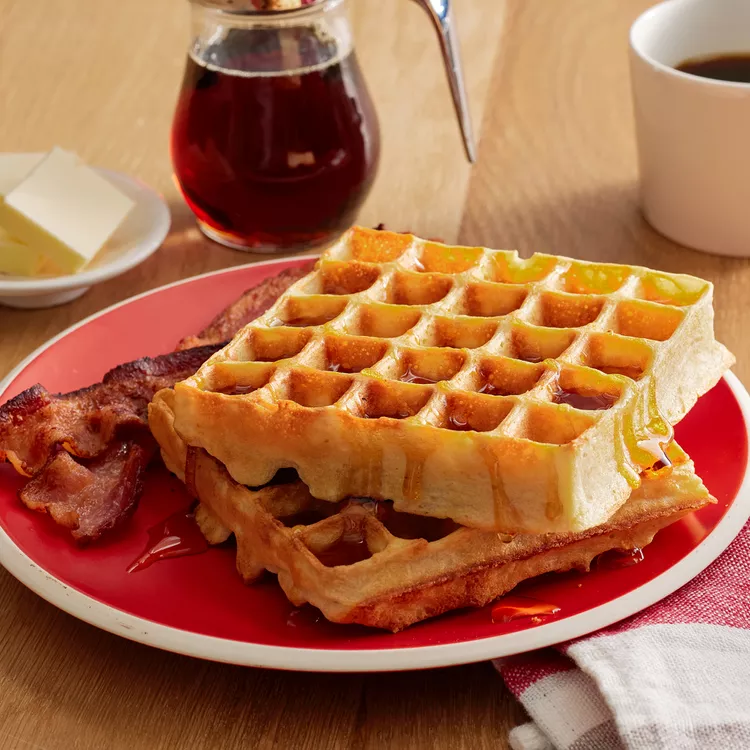

Home

Waffles
Ingredients
- 2 Eggs
- Flour
- Milk
- oil
- sugar
- Baking powder
- salt
- Vanilla
- Cooking spray
Steps
- Preheat a waffle iron according to manufacturer's instructions.
- Whisk eggs in a large bowl until light and fluffy. Add flour, milk, and vegetable oil and mix to combine. Whisk in sugar, then mix in baking powder, salt, and vanilla just until smooth, being careful not to overmix.
- Spray the preheated waffle iron with nonstick spray. Pour batter onto the hot waffle iron and cook until golden brown and the iron stops steaming, 3 to 5 minutes.